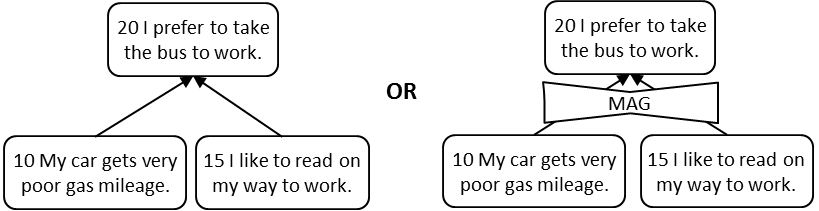

Магнитный “и”-соединитель - соединитель, используемый в логических схемах на основе достаточности, чтобы указать, что два или более объекта являются независимыми причинами, которые вносят аддитивный вклад в общий эффект. Каждая дополнительная причина постепенно способствует увеличению (или уменьшению) эффекта. Никакие символы или символы в форме галстука-бабочки не используются для обозначения магнитного «и»-отношений.
Использование: Как правило, следует идентифицировать независимые причины, на которые приходится не менее 70% величины эффекта. В этом случае эффект или проблема значительно уменьшается, если эти основные причины устранены.
Магнитный соединитель «и» используется в деревьях текущей реальности, деревьях будущей реальности и отрицательных ветвях. Если используется галстук-бабочка, он пересекается со стрелками, исходящими от всех дополнительных причин, и указывает на то, что устранение какой-либо одной причины ухудшит эффект на некоторую величину. Чтобы устранить все ступенчатые эффекты, необходимо устранить все дополнительные причины. Причины могут быть выборочно устранены или сохранены для достижения приемлемого уровня воздействия. Часто независимые стрелки, входящие в объект, интерпретируются как означающие, что объекты в основании стрелок являются независимыми аддитивными причинами. В логических схемах, в которых используется магнитный соединитель «и», две или более независимых стрелки, входящие в объект, интерпретируются как означающие, что каждая из причинных сущностей может учитывать весь эффект.
Иллюстрация: следующая диаграмма означает: если

См .: “и”-соединитель, концептуальный “и”-соединитель.
#мп
Синоним: Магнитный “и”-соединитель